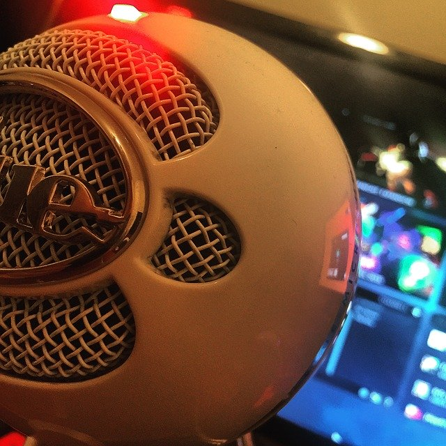

Monitor
El monitor es un dispositivo electrónico de salida de la computadora en el que se muestran las imágenes y textos generados por medio de un adaptador gráfico o de video de ésta. El término monitor se refiere normalmente a la pantalla de vídeo, y su función principal y única es la de permitir al usuario interactuar con la computadora. Una computadora típica presenta un monitor con tecnología CRT (tubos de rayos catódicos), la misma que emplean los televisores; sin embargo, hoy en día existe la tecnología TFT (transistor de película fina) que reduce significativamente el volumen de los monitores.
CPU

"La unidad central de procesamiento o unidad de procesamiento central" (conocida por las siglas CPU, del inglés: Central Processing Unit), es el hardware dentro de un ordenador u otros dispositivos programables, que interpreta las instrucciones de un programa informático mediante la realización de las operaciones básicas aritméticas, lógicas y de entrada/salida del sistema. El término, y su acrónimo, han estado en uso en la industria de la Informática por lo menos desde el principio de los años 1960. La forma, el diseño de CPU y la implementación de las CPU ha cambiado drásticamente desde los primeros ejemplos, pero su operación fundamental sigue siendo la misma. Un ordenador puede tener más de una CPU; esto se llama multiprocesamiento. Todas las CPU modernas son microprocesadores, lo que significa que contienen un solo circuito integrado (chip). Algunos circuitos integrados pueden contener varias CPU en un solo chip; estos son denominados procesadores multinúcleo. Un circuito integrado que contiene una CPU también puede contener los dispositivos periféricos, y otros componentes de un sistema informático; a esto se llama un sistema en un chip (SoC).
Teclado
En informática, un teclado es un dispositivo o periférico de entrada, en parte inspirado en el teclado de las máquinas de escribir, que utiliza un sistema de botones o teclas, para que actúen como palancas mecánicas o interruptores electrónicos que envían toda la información a la computadora o al teléfono móvil. Es un instrumento que se utiliza enviar todo tipo de información a las computadoras e incluso a un teléfono móvil. Acá el dispositivo tiene teclas alfanuméricas, es decir, letras, números y símbolos, incluyendo los signos de puntuación y teclas especiales que cumplen diferentes funciones.
Mouse
El "ratón o mouse" hace parte de los periféricos de tu equipo y es la parte del computador que te permite interactuar con los objetos que aparecen en la pantalla, por medio de un cursor o puntero que verás en el monitor. Por lo general, el mouse o ratón (tiene dos botones) el izquierdo te sirve para abrir, arrastrar, seleccionar y ejecutar funciones. El derecho te permite acceder a funciones adicionales de los comandos.
Micrófono

Uno de los númerosos dispositivos periféricos, es el micrófono de computadora o micrófono de PC, es específicamente un dispositivo de entrada de audio, quizás el más común. Hablemos de la definición de micrófono de computadora, sus partes, funcionamiento, tipos y usos. El micrófono nace hacia la segunda mitad del siglo XIX, apartado del contexto informático. Aparece como un (mecanismo transductor) que permite captar cualquier onda sonora, amplificarla y llevarla de un lugar a otro en la forma de impulso eléctrico. Se integra a las primeras computadoras como dispositivo de entrada.
Headsets

En informática, un auricular es un dispositivo periférico de salida que se utiliza para escuchar audio desde un dispositivo electrónico. También llamado audífono. (En inglés: Headsets). Los auriculares se enganchan en la cabeza u oídos y permiten a sus usuarios escuchar de forma privada audio. Algunos auriculares traen micrófono incorporados. Los dispositivos que permiten escuchar el audio al ambiente en general se llaman parlantes o altavoces.Usualmente se conectan por puerto USB, por conector jack o de forma inalámbrica. La mayoría de los auriculares soportan un hasta 100 dB (decibelios) o en algunos casos más, lo que puede producir daños permanentes en la audición humana.
Webcam
Es una pequeña cámara digital conectada a una computadora la cual puede capturar imágenes y transmitirlas a través de Internet, ya sea a una página web u otras computadoras de forma privada.Una cámara web necesita una computadora para transmitir las imágenes. Sin embargo, existen otras cámaras autónomas que únicamente necesitan un punto de acceso a la red informática, bien sea ethernet o inalámbrico. Para diferenciarlas de las cámaras web se las denomina cámaras de red. Ambas son útiles en tareas de seguridad, para videovigilancia. También son muy utilizadas en mensajería instantánea y chat como en Skype, Line, Hangouts etc. Por lo general puede transmitir imágenes en vivo, pero también puede capturar imágenes o pequeños videos (dependiendo del programa de la cámara web) puede ser grabado y transmitido por Internet. Dentro de la distinción tradicional de los accesorios de PC, la cámara web es un dispositivo de entrada, ya que por medio de él podemos transmitir imágenes hacia la computadora, y tomarse fotos y editarlas.